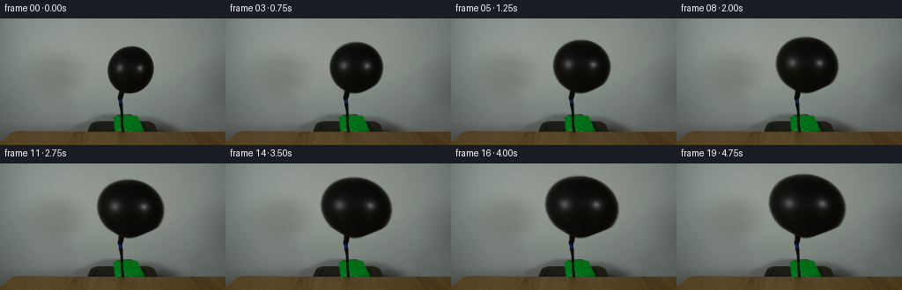
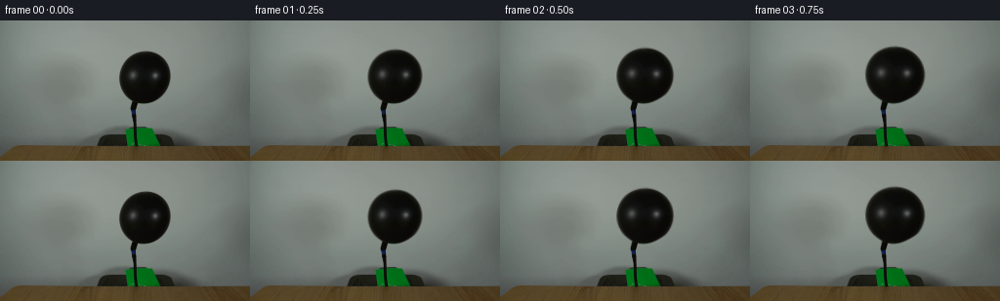

CODING AGENTS AS PIXEL WORLD MODELS
traex/GPT-6.1-Sol · 0038
点击播放 · 原生 RGB 像素
逐轮保存的候选
回放视频、检查图与代码变化。
每份候选均可单独播放。实际图片检查记录在下方工具轨迹中。
候选 01播放与检查图
点击播放 · 原生 RGB 像素


展开代码变化
--- 上一保存版本
+++ 本次保存版本
@@ -0,0 +1,94 @@
+"""Deterministic image-based balloon inflation, with a stationary set."""
+from pathlib import Path
+import numpy as np
+from PIL import Image
+from scipy.ndimage import (binary_fill_holes, binary_erosion,
+ distance_transform_edt, map_coordinates)
+import artifact_io
+
+ROOT = Path(__file__).resolve().parent
+
+
+def prepare(image):
+ h, w = image.shape[:2]
+ y, x = np.mgrid[:h, :w].astype(float)
+ # The wall behind the balloon is softly illuminated. Estimate it row-wise
+ # from the visible wall on either side, retaining its original color cast.
+ background = image.copy().astype(float)
+ wall = background.copy()
+ for j in range(28, 90):
+ # No hose or balloon falls in these samples.
+ xs = np.r_[np.arange(105, 119), np.arange(179, 200)]
+ for c in range(3):
+ fit = np.polyfit(xs - 150, image[j, xs, c], 2)
+ wall[j, 117:180, c] = np.polyval(fit, np.arange(117, 180) - 150)
+ lum = image.mean(axis=2)
+ domain = (y >= 29) & (y <= 88) & (x >= 119) & (x <= 178)
+ mask = binary_fill_holes((lum < 91) & domain)
+ core = binary_erosion(mask, iterations=2)
+ dist, indices = distance_transform_edt(~core, return_indices=True)
+ nearest_color = image[indices[0], indices[1]].astype(float)
+ # Resolve the camera's softened contour into latex and coverage separately,
+ # so scaling does not drag a green wall fringe along with the rubber.
+ d = wall - nearest_color
+ alpha = np.clip(np.sum((wall-image)*d, axis=2) /
+ np.maximum(np.sum(d*d, axis=2), 1), 0, 1)
+ alpha[core] = 1.0
+ alpha[~domain | (dist > 5.0)] = 0.0
+ alpha[alpha < .018] = 0
+ # Restrict very faint distant wall residuals to the softened silhouette.
+ near = distance_transform_edt(~mask)
+ alpha[near > 2.7] = 0
+ # The source wall is left untouched away from the object; in the vacated
+ # object region, it is reconstructed. Identity compositing recovers source.
+ support = alpha > 0
+ background[support] = wall[support]
+ foreground = (image - (1-alpha[..., None])*background) / np.maximum(alpha[..., None], 1e-6)
+ foreground = np.clip(foreground, 0, 255)
+ premult = foreground * alpha[..., None]
+ return background, alpha, premult
+
+
+def generate():
+ source = np.array(Image.open(ROOT / 'first_frame.png').convert('RGB'))
+ bg, alpha, premult = prepare(source.astype(float))
+ h, w = source.shape[:2]
+ yy, xx = np.mgrid[:h, :w].astype(float)
+ frames = [source.copy()]
+ anchor_x, anchor_y = 137.4, 86.3
+ for i in range(1, 20):
+ time = i / 4
+ # Constant air supply: volume increases linearly. The initially oval
+ # latex rounds out faster across its width than along its length.
+ expansion = (1 + 3.5 * time / 4.75)**(1/3) - 1
+ stretch_y = 1 + .54 * expansion
+ src_y = np.where(yy < anchor_y,
+ anchor_y + (yy-anchor_y)/stretch_y, yy)
+ height = np.maximum(anchor_y-src_y, 0)
+ # Neck strain dies off at the hose connection. Everything below the
+ # junction, including the hose itself, remains absolutely stationary.
+ neck = np.clip(height / 12.0, 0, 1)
+ neck = neck*neck*(3-2*neck)
+ stretch_x = 1 + expansion*neck
+ # Buoyancy brings the swelling upper lobe a little closer to vertical;
+ # the neck never slips off the end of the hose.
+ shear = -.36*expansion*height
+ sway = .18*np.sin(2.0*time)*np.sin(min(time, 1)*np.pi/2)*neck
+ src_x = anchor_x + (xx-anchor_x-shear-sway) / stretch_x
+ coords = [src_y, src_x]
+ a = map_coordinates(alpha, coords, order=1, mode='constant', cval=0)
+ rgb = np.stack([map_coordinates(premult[..., c], coords, order=1,
+ mode='constant', cval=0) for c in range(3)], axis=2)
+ frame = bg*(1-a[..., None]) + rgb
+ # Keep pixels outside both silhouettes exactly static, with no
+ # camera noise, exposure breathing, or unrelated scene motion.
+ static = (a == 0) & (alpha == 0)
+ frame[static] = source[static]
+ frames.append(np.clip(np.rint(frame), 0, 255).astype(np.uint8))
+ frames = np.stack(frames)
+ artifact_io.save(frames, ROOT)
+ return frames
+
+
+if __name__ == '__main__':
+ generate()
可观测工具轨迹
实际执行的命令与返回图片。
命令 1exit 0
/bin/bash -lc "ls -la && cat GENERATION_RULES.md && printf '\\n---PROMPT---\\n' && cat prompt.txt"
命令 2exit 0
/bin/bash -lc "cat artifact_io.py && python - <<'PY'
from PIL import Image
import numpy as np
im=np.array(Image.open('first_frame.png').convert('RGB'))
print('shape', im.shape)
# grayscale ASCII
s=Image.fromarray(im).resize((96,54))
a=np.array(s).mean(2)
cs='@%#*+=-:. '
for r in a:
print(''.join(cs[min(9,int(x)*10//256)] for x in r))
print('rows sample')
for y in range(0,144,8):
print(y,[(x,im[y,x].tolist()) for x in range(0,256,16)])
PY"命令 3exit 0
/bin/bash -lc "python - <<'PY'
import numpy as np
from PIL import Image
im=np.array(Image.open('first_frame.png')).astype(float); g=im.mean(2)
for y in range(24,100):
xs=np.where(g[y,110:190]<95)[0]+110
runs=np.split(xs,np.where(np.diff(xs)>1)[0]+1)
print(y,[(int(r[0]),int(r[-1])) for r in runs if len(r)>0])
print('zoom numeric ASCII (x118..179 y27..94)')
cs='@%#*+=-:. '
for r in g[27:95,118:181]:
print(''.join(cs[min(9,int(x)*10//256)] for x in r))
PY"命令 4exit 0
/bin/bash -lc "python - <<'PY'
import numpy as np
from PIL import Image
from scipy.ndimage import gaussian_filter
im=np.array(Image.open('first_frame.png')); g=im.mean(2)
for y in [31,32,33,40,50,60,70,80,81,82,83,84,85,86,87]:
print(y,[(x,list(im[y,x])) for x in range(118,180) if g[y,x]<130])
PY"命令 5exit 0
/bin/bash -lc "python - <<'PY' import importlib.util for m in ['numpy','PIL','scipy','cv2','imageio','imageio_ffmpeg']: print(m, bool(importlib.util.find_spec(m))) PY"
命令 6exit 0
/bin/bash -lc "cat > generate.py <<'PY'
\"\"\"Deterministic image-based balloon inflation, with a stationary set.\"\"\"
from pathlib import Path
import numpy as np
from PIL import Image
from scipy.ndimage import (binary_fill_holes, binary_erosion,
distance_transform_edt, map_coordinates)
import artifact_io
ROOT = Path(__file__).resolve().parent
def prepare(image):
h, w = image.shape[:2]
y, x = np.mgrid[:h, :w].astype(float)
# The wall behind the balloon is softly illuminated. Estimate it row-wise
# from the visible wall on either side, retaining its original color cast.
background = image.copy().astype(float)
wall = background.copy()
for j in range(28, 90):
# No hose or balloon falls in these samples.
xs = np.r_[np.arange(105, 119), np.arange(179, 200)]
for c in range(3):
fit = np.polyfit(xs - 150, image[j, xs, c], 2)
wall[j, 117:180, c] = np.polyval(fit, np.arange(117, 180) - 150)
lum = image.mean(axis=2)
domain = (y >= 29) & (y <= 88) & (x >= 119) & (x <= 178)
mask = binary_fill_holes((lum < 91) & domain)
core = binary_erosion(mask, iterations=2)
dist, indices = distance_transform_edt(~core, return_indices=True)
nearest_color = image[indices[0], indices[1]].astype(float)
# Resolve the camera's softened contour into latex and coverage separately,
# so scaling does not drag a green wall fringe along with the rubber.
d = wall - nearest_color
alpha = np.clip(np.sum((wall-image)*d, axis=2) /
np.maximum(np.sum(d*d, axis=2), 1), 0, 1)
alpha[core] = 1.0
alpha[~domain | (dist > 5.0)] = 0.0
alpha[alpha < .018] = 0
# Restrict very faint distant wall residuals to the softened silhouette.
near = distance_transform_edt(~mask)
alpha[near > 2.7] = 0
# The source wall is left untouched away from the object; in the vacated
# object region, it is reconstructed. Identity compositing recovers source.
support = alpha > 0
background[support] = wall[support]
foreground = (image - (1-alpha[..., None])*background) / np.maximum(alpha[..., None], 1e-6)
foreground = np.clip(foreground, 0, 255)
premult = foreground * alpha[..., None]
return background, alpha, premult
def generate():
source = np.array(Image.open(ROOT / 'first_frame.png').convert('RGB'))
bg, alpha, premult = prepare(source.astype(float))
h, w = source.shape[:2]
yy, xx = np.mgrid[:h, :w].astype(float)
frames = [source.copy()]
anchor_x, anchor_y = 137.4, 86.3
for i in range(1, 20):
time = i / 4
# Constant air supply: volume increases linearly. The initially oval
# latex rounds out faster across its width than along its length.
expansion = (1 + 3.5 * time / 4.75)**(1/3) - 1
stretch_y = 1 + .54 * expansion
src_y = np.where(yy < anchor_y,
anchor_y + (yy-anchor_y)/stretch_y, yy)
height = np.maximum(anchor_y-src_y, 0)
# Neck strain dies off at the hose connection. Everything below the
# junction, including the hose itself, remains absolutely stationary.
neck = np.clip(height / 12.0, 0, 1)
neck = neck*neck*(3-2*neck)
stretch_x = 1 + expansion*neck
# Buoyancy brings the swelling upper lobe a little closer to vertical;
# the neck never slips off the end of the hose.
shear = -.36*expansion*height
sway = .18*np.sin(2.0*time)*np.sin(min(time, 1)*np.pi/2)*neck
src_x = anchor_x + (xx-anchor_x-shear-sway) / stretch_x
coords = [src_y, src_x]
a = map_coordinates(alpha, coords, order=1, mode='constant', cval=0)
rgb = np.stack([map_coordinates(premult[..., c], coords, order=1,
mode='constant', cval=0) for c in range(3)], axis=2)
frame = bg*(1-a[..., None]) + rgb
# Keep pixels outside both silhouettes exactly static, with no
# camera noise, exposure breathing, or unrelated scene motion.
static = (a == 0) & (alpha == 0)
frame[static] = source[static]
frames.append(np.clip(np.rint(frame), 0, 255).astype(np.uint8))
frames = np.stack(frames)
artifact_io.save(frames, ROOT)
return frames
if __name__ == '__main__':
generate()
PY
python generate.py
python - <<'PY'
import numpy as np
from PIL import Image
im=np.array(Image.open('first_frame.png')); f=np.array(Image.open('frames/19.png'))
print('First frame identical:', np.array_equal(im,np.array(Image.open('frames/00.png'))))
print('stationary table/hose lower:', np.max(abs(im[89:].astype(int)-f[89:].astype(int))))
cs='@%#*+=-:. '
for k in [1,9,19]:
a=np.array(Image.open(f'frames/{k:02}.png').resize((96,54))).mean(2)
print('\\nFRAME',k)
for r in a:
print(''.join(cs[min(9,int(x)*10//256)] for x in r))
PY"命令 7exit 0
/bin/bash -lc "python - <<'PY'
from pathlib import Path
import numpy as np
from PIL import Image
frames=np.stack([np.array(Image.open(f'frames/{i:02d}.png').convert('RGB')) for i in range(20)])
assert frames.shape == (20,144,256,3) and frames.dtype == np.uint8
assert np.array_equal(frames[0],np.array(Image.open('first_frame.png').convert('RGB')))
areas=(frames[:,:86].mean(-1)<90).sum((1,2))
print('Balloon silhouette areas:',areas.tolist())
print('Frame-to-frame mean RGB changes:',np.round(np.abs(np.diff(frames.astype(float),axis=0)).mean((1,2,3)),3).tolist())
print('Output tensor:',np.load('pixels.npz')['pixels'].shape)
print('All generation checks passed.')
PY"保存候选 1 份；完成命令 7 次；可验证图片返回 0 张。原始 API 响应与完整日志保留在本地。